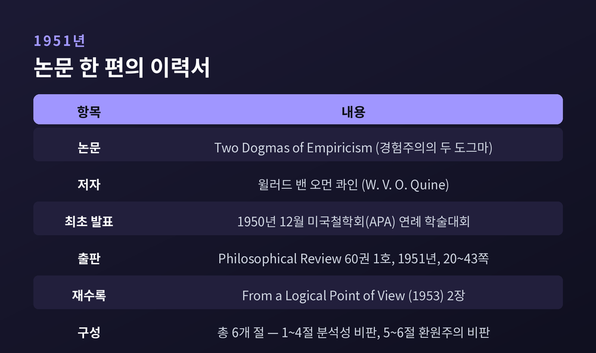
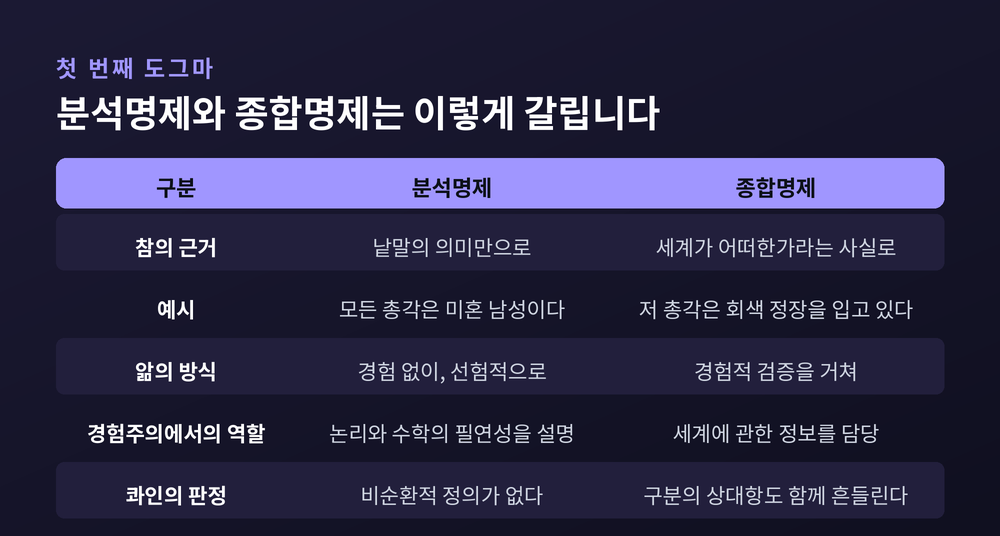
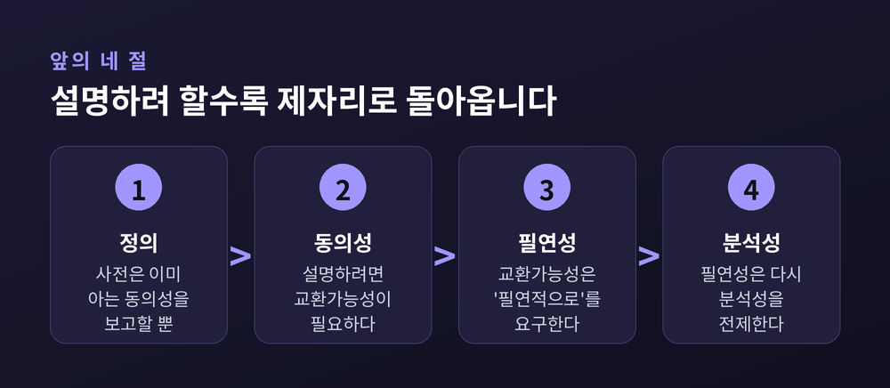
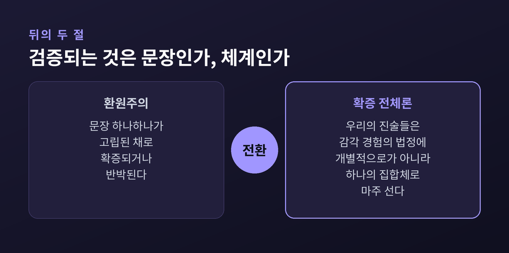
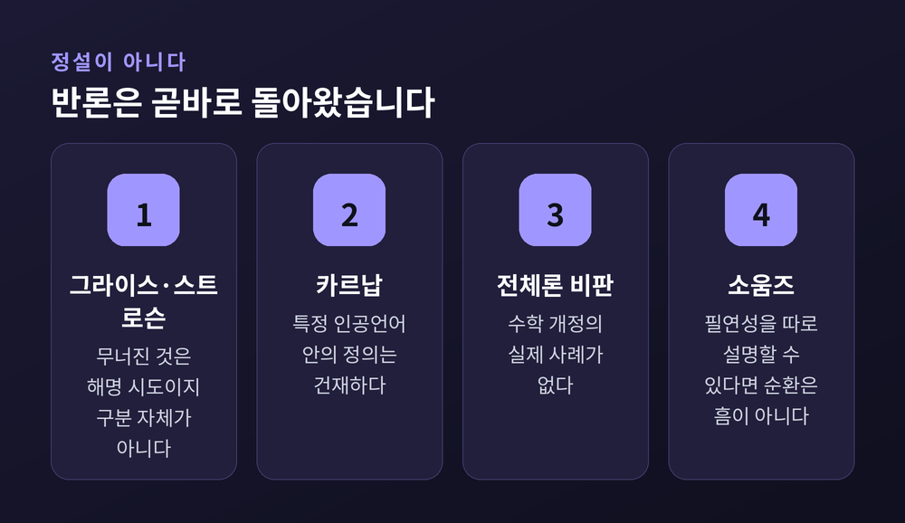
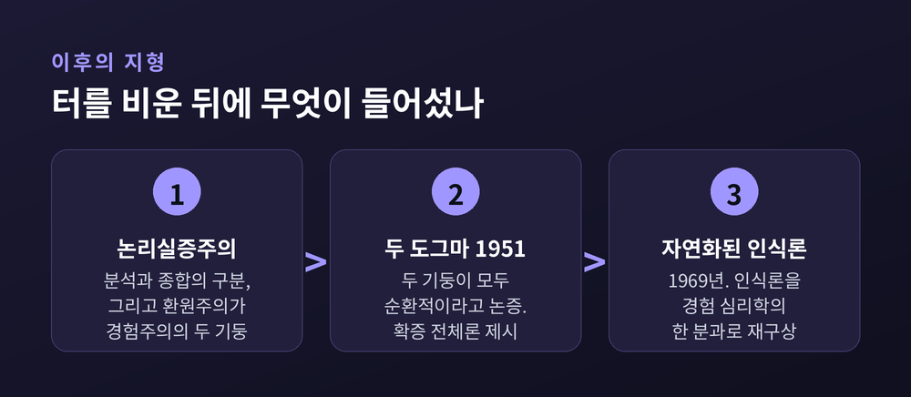

이번 글에서는 콰인의 「경험주의의 두 도그마」를 정리해 보겠습니다. 1951년에 나온 논문 한 편이 왜 분석명제와 종합명제의 구분을 무너뜨렸다고 평가받는지, 그 논증의 뼈대와 남은 반론까지 함께 짚겠습니다.
세 줄 요약
「경험주의의 두 도그마(Two Dogmas of Empiricism)」는 1951년 『Philosophical Review』 60권 1호 20~43쪽에 실렸습니다. 저자는 윌러드 밴 오먼 콰인입니다. 공개 발표는 그보다 앞선 1950년 12월 미국철학회 연례 학술대회였고, 1953년에는 논문집 『From a Logical Point of View』에 재수록되었습니다.
시드니대학교의 피터 고드프리스미스는 이 논문을 두고 "20세기 철학 전체에서 가장 중요한 논문으로 여겨지기도 한다"고 적었습니다. 스탠퍼드 철학백과 역시 지난 세기 가장 많이 인용된 논문 중 하나로 기술합니다.
흥미로운 것은 이 글이 갑작스러운 착상이 아니었다는 점입니다. 콰인은 1932년 유럽에서 루돌프 카르납과 공부했습니다. 그리고 이미 1933년에 의심을 품습니다. 카르납이 그해 3월 31일 남긴 기록에 이런 대목이 있습니다. "그는 논리적 공리와 경험적 문장 사이에 차이가 있느냐고 묻는다. 그는 없다고 생각한다. 정도의 차이일 뿐이라고." 의심이 활자가 되기까지 열일곱 해가 걸린 셈입니다.
논문은 여섯 개 절로 되어 있습니다. 앞의 네 절이 분석성을, 뒤의 두 절이 환원주의를 다룹니다.

첫 번째 도그마는 분석명제와 종합명제의 구분입니다.
분석명제는 사실과 무관하게 의미만으로 참인 진술입니다. "모든 총각은 미혼 남성이다"가 표준 예시입니다. 종합명제는 세계가 어떠한지에 따라 참과 거짓이 갈립니다. "저 총각은 회색 정장을 입고 있다"가 그렇습니다.
이 구분은 경험주의에 꼭 필요한 물건이었습니다. 논리와 수학의 진리가 왜 필연적인지, 왜 경험 없이도 알 수 있는지를 설명해 주었기 때문입니다. 그래서 "분석적", "필연적", "선험적"이라는 세 낱말이 사실상 한 묶음처럼 쓰였습니다.
두 번째 도그마는 환원주의입니다. 유의미한 진술은 저마다 직접 경험을 지시하는 항들 위에 세워진 논리적 구성물과 동치라는 믿음입니다. 다르게 말하면 문장 하나하나가 고립된 채로도 확증되거나 반박될 수 있다는 생각입니다.
콰인이 겨눈 표적은 막연한 전통이 아니었습니다. 카르납의 정식화였습니다.

콰인은 분석명제를 두 갈래로 나눕니다.
하나는 논리적 참입니다. "어떠한 미혼 남성도 기혼이 아니다"는 '아니다', '이다' 같은 논리 상항만 고정되면 나머지를 무엇으로 바꿔도 참입니다. 다른 하나는 동의어를 갈아 끼우면 첫 번째가 되는 문장입니다. "어떠한 총각도 기혼이 아니다"에서 총각을 미혼 남성으로 바꾸면 됩니다.
문제는 두 번째입니다. 갈아 끼우려면 두 표현이 같은 뜻이라는 것, 곧 동의성을 알아야 합니다. 그런데 동의성은 분석성만큼이나 설명이 필요한 개념입니다.
그래서 콰인은 동의성을 설명할 후보들을 차례로 검토합니다.
먼저 사전의 정의입니다. 그러나 사전은 이미 통용되는 동의 관계를 보고할 뿐입니다. 정의하는 사람이 미리 동의성 개념을 갖고 있어야 정의가 가능합니다. 콰인의 문장은 이렇습니다. "정의는 동의성을 설명하는 것이 아니라 동의성에 기대고 있다."
다음은 교환가능성입니다. 두 표현이 모든 맥락에서 진리값을 바꾸지 않고 바뀔 수 있으면 동의어라고 하자는 제안입니다. 이것도 걸립니다. 뒤에서 따로 보겠습니다.
마지막은 카르납식 의미론적 규칙입니다. 인공언어를 세우고 규칙으로 무엇이 분석적인지 명시하자는 방안입니다. 콰인은 여기서도 같은 원을 발견합니다. 규칙 안에 이미 '분석적'이라는 낱말이 들어 있는데, 우리가 이해하지 못하는 것이 바로 그 낱말이기 때문입니다. 목록은 얻었지만 그 목록이 왜 하필 그 목록인지는 답할 수 없습니다.
그의 결론은 담담합니다. "우리는 자기 신발끈을 잡아당기는 짓을 그만두는 편이 낫겠다."

교환가능성 이야기가 흥미롭습니다. 사소한 반례부터 보겠습니다. "'총각'은 열 글자 미만이다"라는 문장에서 총각을 미혼 남성으로 바꾸면 거짓이 됩니다. 이런 것은 낱말 조각의 문제라며 넘길 수 있습니다.
진짜 반례는 다른 데 있습니다. "심장을 가진 생물"과 "콩팥을 가진 생물"입니다.
이 두 표현은 가리키는 대상의 범위, 곧 외연이 정확히 같습니다. 심장이 있는 모든 생물은 콩팥이 있고 그 역도 성립하기 때문입니다. 그러니 진리값을 바꾸지 않고 서로 바꿔 쓸 수 있습니다. 그러나 두 표현의 의미가 같다고 말할 사람은 없습니다.
여기서 구제책이 등장합니다. '필연적으로'라는 말을 언어에 넣는 것입니다. "필연적으로, 모든 그리고 오직 총각만이 미혼 남성이다"는 참입니다. "필연적으로, 모든 그리고 오직 심장 가진 생물만이 콩팥 가진 생물이다"는 거짓입니다. 구분이 살아나는 듯합니다.
그런데 이 '필연적으로'가 붙어서 참이 되는 문장이란 결국 분석적인 문장뿐입니다. 필연성을 이해하려면 분석성을 이미 이해하고 있어야 합니다.
원이 닫힙니다. 스탠퍼드 철학백과는 이 개념들의 관계를 "공간 속의 닫힌 곡선"이라 부르고, 이들이 "서로의 빨랫감을 들여오는 것 말고는 아무 설명적 일도 하지 않는" 것처럼 보인다고 적었습니다.
그래서 콰인의 유명한 선고가 나옵니다. "분석적 진술과 종합적 진술 사이의 경계는 아직 그어진 적이 없다. 그런 구분이 그어질 수 있다는 것은 경험주의자들의 비경험적 도그마이며, 형이상학적 신앙 조항이다."
뒤의 두 절에서 콰인은 환원주의로 넘어갑니다.
환원주의가 참이려면 감각소여 언어를 특정하고 나머지 담론 전부를 문장 단위로 그리로 번역해야 합니다. 콰인은 카르납의 『세계의 논리적 구조』를 검토합니다. 카르납의 독창성은 인정합니다. 그런 빈약한 토대 위에서 정의할 수 있으리라 아무도 꿈꾸지 못한 감각 개념들을 실제로 정의해냈다고 평가합니다.
그러나 아쉬운 점도 분명히 짚습니다. 카르납의 감각소여 언어에는 고등 집합론에 이르는 논리 표기가 이미 들어 있었습니다. 그리고 "질 q가 시공점 x, y, z, t에 있다"의 '있다'가 끝내 정의되지 않았습니다. 카르납 자신도 기획이 미완이라고 인정했습니다.
그래서 콰인은 다른 그림을 내놓습니다. 확증 전체론입니다.
"외부 세계에 관한 우리의 진술들은 감각 경험의 법정에 개별적으로가 아니라 오직 하나의 집합체로서 마주 선다."
전체 과학은 경계 조건이 경험인 힘의 장과 같습니다. 주변부에서 충돌이 생기면 내부에서 재조정이 일어납니다. 이 발상의 뿌리는 1914년 피에르 뒤엠에게 있습니다. 온도계 하나가 온도를 제대로 재려면 재료도 맞아야 하고, 보정도 되어 있어야 하고, 교란하는 힘도 없어야 하고, 무엇보다 설계에 들어간 물리 법칙들이 옳아야 합니다. 측정이 어긋났을 때 무엇이 잘못됐는지는 실험 하나가 말해 주지 않습니다.
콰인이 급진적인 지점은 여기서부터입니다. 뒤엠 본인조차 범위 밖이라 여겼던 영역, 곧 수학과 논리학까지 이 논제를 끌고 갑니다.
귀결은 이렇습니다. 어떤 진술도 개정으로부터 면제되어 있지 않습니다. 체계의 다른 곳을 충분히 조정하면 무엇이든 붙들 수 있고, 무엇이든 놓을 수 있습니다. 콰인은 실제로 양자논리를 언급하며 배중률의 개정 가능성까지 열어 둡니다.

콰인은 자기 논증의 귀결을 두 가지로 정리합니다.
하나는 형이상학과 자연과학의 경계가 흐려진다는 것입니다. 물리적 대상은 경험을 통한 정의로 얻어지지 않습니다. 편리한 매개자로 도입된 정립물입니다. 그리고 그 점에서 호메로스의 신들과 인식론적으로 견줄 만합니다.
오해하기 쉬운 대목이라 덧붙이겠습니다. 콰인은 물리주의자입니다. 그가 말하는 차이는 종류의 차이가 아니라 효율의 차이입니다. "물리적 대상이라는 신화는 경험의 흐름에 다룰 만한 구조를 넣는 장치로서 다른 신화들보다 더 효과적이었다는 점에서 인식론적으로 우월하다."
다른 하나는 실용주의로의 이동입니다. 과학의 일이 과거 경험으로 미래 경험을 예측하는 것이라면, 어떤 설명을 택할지의 기준은 그것이 우리 일을 얼마나 잘 돕느냐뿐입니다.
카르납도 언어 틀을 고를 때는 실용적으로 사고했습니다. 다만 콰인이 보기에 그들의 실용주의는 "분석과 종합 사이의 상상된 경계에서 멈춥니다". 콰인에게는 체계의 모든 변경이, 합리적인 한, 실용적입니다.
같은 시기의 다른 글에서 그는 이렇게 적었습니다. 우리 조상들의 지식은 문장들의 직물이며, 사실로 검고 규약으로 흰 옅은 회색이라고. 그리고 그 안에 완전히 검은 실이나 완전히 흰 실이 있다고 볼 근거를 찾지 못했다고.
이 논문이 정설로 굳었다고 보면 곤란합니다. 반론이 만만치 않았습니다.
1956년 그라이스와 스트로슨이 「어느 도그마를 옹호하며」를 같은 학술지에 실었습니다. 요지는 이렇습니다. 콰인이 무너뜨린 것은 구분을 해명하려는 시도들이지 구분 자체가 아니라는 것입니다. 분석과 종합을 가르는 관행은 일상 언어 능력에 깊이 뿌리내려 있고, 콰인이 요구하는 수준의 명시적 정의를 필요로 하지 않는다는 지적입니다. 나아가 동의성에 대한 회의는 의미 자체에 대한 회의로 미끄러지며, 그렇게 되면 번역의 옳고 그름을 논하는 일조차 불가능해진다고 보았습니다.
카르납 쪽 사정은 더 미묘합니다. 스탠퍼드 철학백과는 분석성 문제를 세 층으로 나눕니다. 기존 자연언어에 대한 구분, 임의의 인공언어에 대한 구분, 특정 인공언어에 대한 구분입니다. 콰인의 비판은 앞의 둘을 향합니다. 그런데 카르납이 실제로 한 작업은 대부분 세 번째였습니다. 카르납은 자기가 구성한 거의 모든 언어 틀에 대해 형식적으로 올바른 분석성 정의를 제시했습니다. 그래서 두 사람이 상당 부분 서로 어긋나게 말하고 있었다는 쪽으로 최근의 해석이 기울고 있습니다.
전체론 자체에도 흠이 지적됩니다. 콰인은 수학과 논리까지 확장되는 전체론을 사실상 논증 없이 제시했습니다. 경험적 근거로 수학이 개정된 역사적 사례도 찾기 어렵습니다. 흔히 드는 리만 기하학 사례는 오독입니다. 비유클리드 기하학은 19세기 수학자들의 순수 개념적 성취였고, 아인슈타인은 그중 하나가 물리학에 더 잘 맞는다고 논했을 뿐입니다.
중심성 설명에도 반론이 있습니다. 콰인은 분석적으로 보이는 것이 그물의 중심에 있기 때문이라고 설명했습니다. 그러나 콰인 자신이 나중에 인정했듯, "지구는 5분 이상 존재해 왔다"는 매우 중심적이지만 분석적으로 보이지 않습니다. 반대로 "2주는 14일이다"는 분석적으로 보이지만 조금도 중심적이지 않습니다.
스콧 소움즈는 더 근본을 건드립니다. 콰인의 순환 논증이 효력을 가지려면 논리실증주의의 두 전제가 필요합니다. 모든 필연적 진리는 분석적이라는 것, 그리고 필연성을 설명하려면 분석성이 필요하다는 것입니다. 발표 당시에는 대부분이 이를 받아들였습니다. 지금은 사정이 다릅니다. 필연성을 분석성 없이 설명할 수 있다면, 분석성이 필연성에 기대는 것은 더 이상 흠이 아닙니다.

덜 알려진 사실이 하나 있습니다. 콰인은 후기에 일종의 분석성을 받아들였습니다.
1974년 그는 "자극 분석성"이라는 개념을 인정합니다. 어떤 문장이 분석적인 것은 모두가 그 낱말들을 배우면서 그것이 참임을 함께 배우는 경우입니다. 그래서 분석성은 사회적 균일성에 달려 있다고 말합니다. 이 기준에서는 배중률이나 수학이 오히려 분석적이지 않게 됩니다. 마지막 단행본에서도 자연언어의 관찰 정언문에 적용되는 분석성은 인정했습니다.
다만 끝까지 굽히지 않은 것이 있습니다. 이론적 문장 전반에 이 구분을 적용할 때의 의의, 특히 인식론적 의의였습니다.
그가 대신 세운 것이 자연화된 인식론입니다. 1969년의 「자연화된 인식론」에서 그는 인식론을 경험 심리학의 한 분과로 재구상하자고 제안합니다. 지식을 어떻게 얻어야 하는지를 철학의 자리에서 먼저 묻는 대신, 지식이 실제로 어떻게 얻어지는지를 자연 현상으로 탐구하자는 것입니다.
정리하면 이렇습니다. 「두 도그마」가 터를 비웠고, 「자연화된 인식론」이 그 위에 집을 올렸습니다.

끝으로 한 마디만 더 드리겠습니다.
예전에 저는 이 논문을 분석/종합 구분에 대한 사망 선고로 읽었습니다. 지금은 조금 다르게 봅니다. 스탠퍼드 철학백과는 자연언어에서의 분석성 문제가 여전히 진행 중인 논쟁이자 연구 주제라고 명시합니다. 사망 선고라기보다 확실하다고 믿던 것에 붙은 물음표에 가깝습니다.
남는 것은 하나입니다 — 어떤 문장도 홀로 세계 앞에 서지 않는다는 것.
우리가 확실하다고 여기는 문장들도 사실은 주변의 수많은 믿음에 기대어 서 있습니다. 그 그물을 흔들면 함께 흔들립니다. 그렇다면 지금 내가 당연하다고 여기는 것들은 어디쯤에 놓여 있을까요. 그 자리를 한 번쯤 확인해 보시길 권합니다.